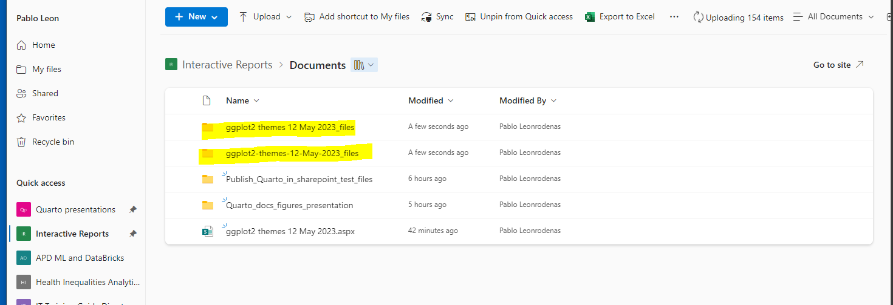

Publish Quarto presentation to Sharepoint
Steps
- Create first a
spacein inSharePointto share my Quarto presentations calledInteractive Reports - Start by creating a project and Quarto document in R Studio
- Populate your Quarto file
- Render your Quarto document
- Rename rendered .html file as .aspx
- Drag this new .aspx onto your OneDrive ( OneDrive NHS England)
- Now go back to the Sharepoint space created earlier
Interactive Reports - Then launch the Nine dots matrix icon in the top left corner of your screen
- Open
My filesmenu from the left - Copy the file from this location in
My filesto the specificInteractive Reportsarea created earlier 10.1 Follow the steps related to selectingCopy tooption from previous drop down menu - Go back to the main menu of the Quarto presentations space 11.1 Click on the three dots menu next to the
All Documentmenu then selectPin to Quick Access - Click again on the Sharepoint main menu and select One Drive
- 1 Then select within OneDrive the
My Filesicon - Final Step. Copy the entire Folder with the suffix
_filescreated when rendering your quarto document into Quarto presentations Documents folder. - Open your Interactive presentation from your Quarto presentations area
- Share presentation with other colleagues
1. Create new space in SharePoint
The first step is to create a new site in Sharepoint to host our Quarto reports. Later on we will use this site to collaborate with other team members.
Open SharePoint and navigate to the top left corner. Click on the Create site plus menu.

We give it a name and now we have our new Interactive reports site up and running.

2. Creating a project and Quarto document
Proceed to create a new R project and a Quarto document, it will be saved as a .qmd file

3. Create a new Quarto Reveal JS presentation
Using reveal js we will build and share and interactive presentation with navigation features to share with other team members.We start in RStudio creating a new Quarto presentation.
This is the YAML section of the presentation with the different topics covered in the slides
4. Populate your Quarto Reveal JS presentation
Write the content of your Quarto report. It is advised also to include an adhoc folder for Figures on the same project
Define rendering properties of your Quarto in the top YAML section
We want to include author details and also system date. We use slide number to display page number of current slid and also use the logo parameter to include .png images from a images folder
4. Render your Quarto Reveal JS presentation
Once you have created your report, render it as you would normally do. You will obtain two files an ‘.html’ and a ‘.qmd’ file. And also the folder containing rendering outputs
Original QMD file and interactive HTML file
04_HTML_QMD_quarto_output.PNG
As this is Quarto presentation using reveal js, two files will be created, one for the standard markdown files and another for the Reveal js files
5. Rename rendered .html file as .aspx
This first step of transforming the original .html file created by Quarto presentation into an interactive presentation involves changing the file extension. Right click on the .html file go to properties menu and on the General tab, change the .html file extension by .aspx
You will see how the file change its icon after that
 After we change it, its icon also changes
After we change it, its icon also changes
6. Drag this new .aspx onto your OneDrive ( OneDrive NHS England)
A message will display on the screen letting you know the “Publish_Quarto_in_sharepoint_test.aspx” file is being copied over NHS England One Drive

8. Then launch the Nine dots matrix icon in the top left corner of your screen
Then you need to find the “One Drive” section on the dots matrix menu top left side corner of your screen
And from there select “OneDrive” from the top icons row.
“Open in new tab” and it will open the screen below in a new tab
Then on the left side of this new window, you must locate the “My files” icon
From this new window you have just opened, you will have to find .aspx file called “Publish_Quarto_in_sharepoint_test.aspx” you just created.
10. Copy the file from this location in My files to the specific Interactive reports area created earlier
Click on the three dots menu on the right dide of the .aspx document we want to copy across to the Interactive reports area

Select Interactive reports area from the left side menu:
Click on the “copy here” button
Now the .aspx file is being copied to the Documents section of the Interactive Reports site
Finally we can see the file in the destination folder
13. Final Step. Copy the entire Folder with the suffix _files created when rendering your quarto document into Quarto presentations Documents folder.
In this particular example, as this is a reveal js presentation, is adviced to copy both the reveal and markdown rendered folders
From your project folder where you created and rendered your initial document, find the folder containing rendering files from the Quarto document. It has the same name as your original .qmd file with a “_files” preffix.
13_03_Drag_rendered_files_to_documents_section.png

14. Open your Interactive presentation from your Quarto presentations area
Once we have the Quarto document in your Area you can open it on your browser
Select “Preview” from the menu
It displays the presentation from your browser inside Sharpoint
This also applies to Quarto presentations using revealjs this enables a whole range of interactive and navigation features for your presentation.
15. Share presentation with other colleagues
We can share the recently published interactive presentation with colleagues. Click on the top right corner members icon:
From this menu you would be able to add new team member to access this file. They will be able to display interactively from their browser